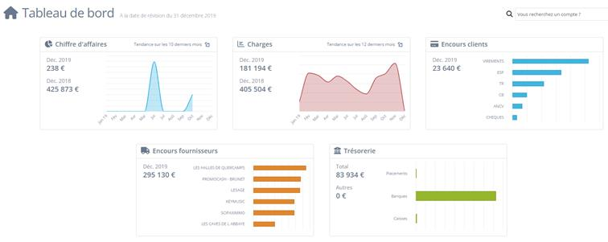

L'Entreprise d'Accueil
Le conseil en +
Fondé il y a plus de 30 ans, BDL Experts est un acteur majeur de l'expertise comptable dans les Hauts-de-France.
Bien plus qu'un simple cabinet comptable, BDL se positionne comme un véritable partenaire stratégique pour les chefs d'entreprise, les accompagnant de la création à la transmission. L'entreprise allie proximité humaine et expertise technique de haut niveau.

Implantations
Hauts-de-France
Domaines d'Intervention
Comptabilité
Pilotage financier & tenue des comptes.
Social & RH
Gestion de la paie & conseil social.
Juridique
Droit des sociétés & fiscalité.
Infrastructure IT
Architecture technique supportant l'activité des 8 sites connectés.
Systèmes
- Virtualisation VMware/Hyper-V
- COAXIS
- Environnement Windows
Réseau & Sécurité
- Ubiquiti
- VPN Fortinet
- MailInBlack
Cloud & SaaS
- Cloud Azure
- Office 365 / OneDrive
- ManageEngine
Présence en ligne
- Registrar : OVH
- DNS : Cloudflare
- En ligne depuis 2009
- Cliquez pour voir les preuves analytics
Environnement Technique
Windows
Ubuntu
Fortinet
GLPI
Missions & Activités
Intégré au service informatique, j'interviens sur le support quotidien, le déploiement des postes et la gestion de parc, avec des actions techniques variées en environnement de production.
Répartition du temps
BTS SIO
Option SISR
Solutions d'Infrastructure, Systèmes et Réseaux
Mastering PC
Mastering manuel ou par PXE, déploiement des logiciels, clés de registre et imprimantes sur les postes utilisateurs.
Helpdesk & O365
Diagnostic et résolution de problèmes sur les applications Microsoft 365, avec suivi des demandes et communication utilisateur.
Gestion de parc IT
Gestion de parc sur GLPI et ManageEngine : inventaire, mise a jour des postes et suivi du materiel.
VPN FortiClient
Mise en place du VPN FortiClient, configuration des profils et assistance a la connexion pour le travail a distance.
Scanner & VoIP
Installation et configuration de scanners, mise en place de telephones VoIP et validation avec les equipes utilisatrices.
MFA & Procédures
Installation de la MFA, documentation des procedures et formalisation des bonnes pratiques d'exploitation.
Sensibilisation phishing
Tests de phishing internes et actions de sensibilisation des utilisateurs.
Migration & Mise à jour GLPI
Mise à jour et migration d’une ancienne instance GLPI (parc informatique) vers une nouvelle plateforme stable, afin de fiabiliser la gestion de 1000+ équipements pour 350 collaborateurs.
Cahier des charges (V1)
Migrer une ancienne instance GLPI (hébergée sur un serveur vieillissant) vers un serveur moderne et une version à jour, tout en conservant le parc existant et en garantissant une bascule sans interruption pour les utilisateurs.
- Conserver les données (parc/historique) sans perte
- Bascule transparente (ancien en parallèle le temps de valider)
- Sécuriser les accès (droits Apache/BDD/GLPI)
- Nouvelle plateforme GLPI opérationnelle (VM Ubuntu + Apache2 + MariaDB)
- Gestion de parc accessible et exploitable
- Validation tuteur et mise en service
Cadrage
BesoinAnalyse du problème, définition du besoin et validation avec le tuteur (périmètre, contraintes, bascule transparente).
VM & paquets
InfrastructureCréation de la VM Ubuntu, configuration réseau et installation des paquets nécessaires (Apache2, MariaDB, PHP, dépendances).
Configuration stack
Apache / BDDConfiguration d’Apache2, MariaDB et GLPI (vhosts, accès, paramètres de base).
Migration BDD
MigrationMigration de l’ancienne base de données et restauration sur la nouvelle instance (contrôles d’intégrité et cohérence).
Paramétrage GLPI
ApplicationValidation tuteur et démarrage de la configuration fonctionnelle de GLPI (structure, accès, premiers réglages).
Stabilisation
Droits & correctifsSuite de la configuration et correction des problèmes rencontrés (droits, accès, cohérence, vérifications).
Mise en service
ProductionValidation tuteur, déplacement de la VM sur le serveur final et mise en service du nouveau GLPI.
Bilan du projet
Le nouveau serveur GLPI est opérationnel et la gestion de parc est fiabilisée pour une volumétrie de 1000+ équipements. La migration a été réalisée de façon transparente (ancien serveur conservé en parallèle le temps de la bascule). Les bases sont maintenant posées pour une évolution vers un vrai système de tickets (workflow + rôles + attribution + reporting).
Améliorations (V2) — Standard GLPI & Ticketing
Après la V1 (parc stabilisé), la V2 vise à tirer parti des fonctions natives GLPI : ticketing, workflow, droits et pilotage, et à rendre la plateforme accessible à l’ensemble des sites.
- Accès multi-sites : sortir GLPI du local (site de Valenciennes) pour permettre aux autres sites de remonter le parc (ouverture contrôlée / reverse-proxy / hébergement cloud).
- Ticketing GLPI : remplacement du canal Teams/Power App par un helpdesk structuré (catégories, priorités, affectations, statuts).
- Fonctions “classiques” GLPI : catalogue de services, règles d’affectation, gabarits, notifications, base de connaissances, satisfaction.
- Adoption : habitudes Teams → pilote + formation courte + support au démarrage.
- Qualité des demandes → catégories, champs obligatoires, modèles de ticket.
- Surcharge → règles d’affectation + priorités + tableau de bord backlog.